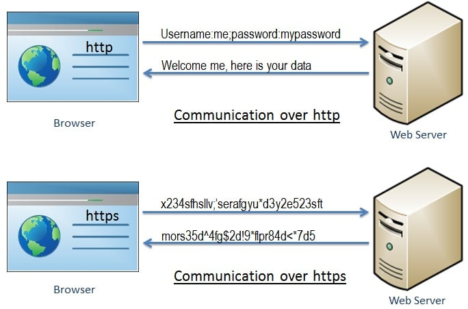
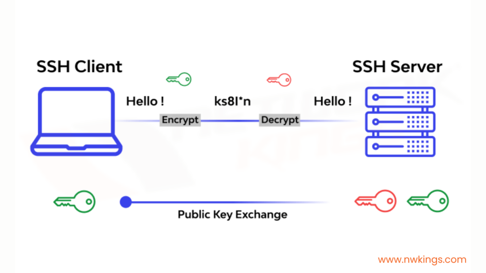
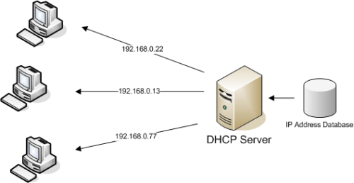
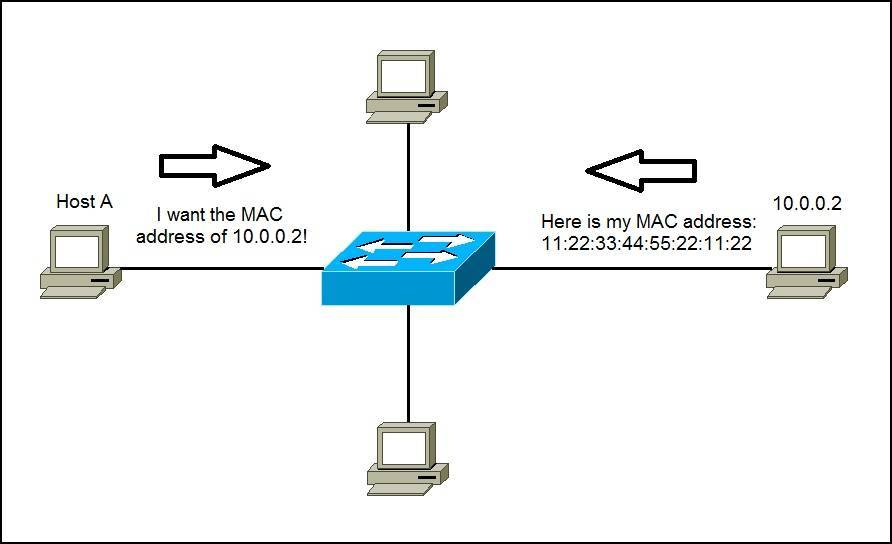

4.5 Protocolos usados en Internet
1. HTTP/HTTPS (HyperText Transfer Protocol / Secure)
HTTP es el protocolo utilizado para la comunicación entre navegadores web y servidores. Se encarga de la transferencia de páginas web y otros recursos.
HTTPS es la versión segura de HTTP, utilizando cifrado TLS/SSL para proteger los datos.
2. FTP/SFTP (File Transfer Protocol / Secure FTP)
FTP permite la transferencia de archivos entre un cliente y un servidor, útil para subir o descargar archivos en servidores remotos.
SFTP es la versión segura de FTP, que utiliza SSH para cifrar la transferencia y proteger los archivos.
3. SSH (Secure Shell)
Es un protocolo que permite acceder de forma remota y segura a otros dispositivos mediante una red.
Se utiliza habitualmente para administrar servidores, ejecutar comandos y transferir archivos de forma cifrada.
4. DNS (Domain Name System)
Traduce nombres de dominio (como ejemplo.com) en direcciones IP (como 192.168.1.1), facilitando que los navegadores encuentren servidores sin tener que recordar números.

5. DHCP (Dynamic Host Configuration Protocol)
Asigna automáticamente direcciones IP a los dispositivos en una red, evitando configuraciones manuales, y proporciona información como la puerta de enlace y los servidores DNS.
6. ARP (Address Resolution Protocol)
Se utiliza para encontrar la dirección MAC asociada a una dirección IP en una red local, siendo esencial en redes Ethernet.
